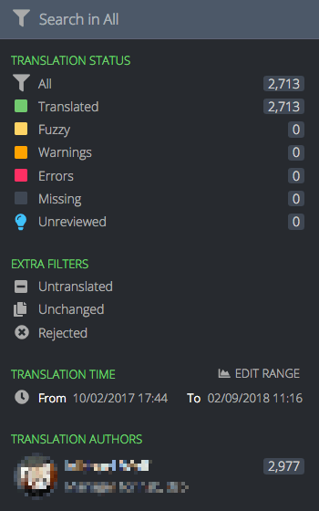
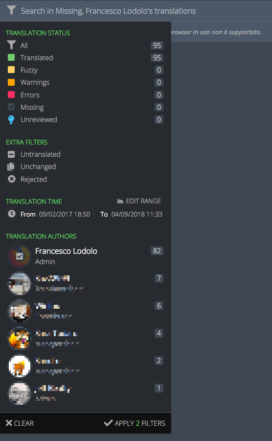
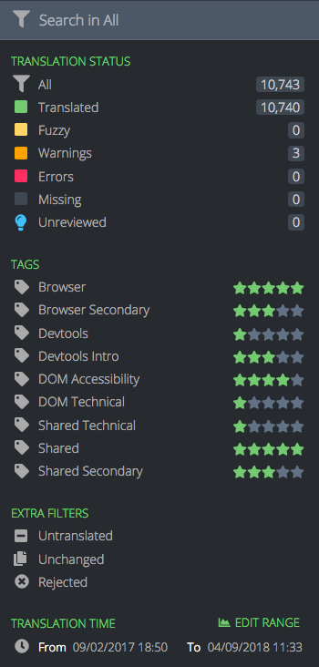
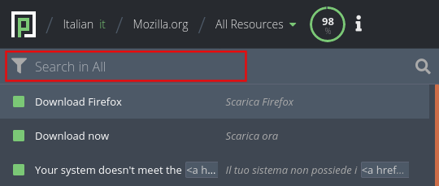

Search and filters
Filters
String status
Strings in Pontoon can be filtered by their status. A string can be in one of the following status:
- Missing: string is not available in the localized file and doesn’t have any approved translations in Pontoon.
- Fuzzy: string is marked as fuzzy in the localized file.
- Translated: string has an approved translation.
- Unreviewed: string has been submitted – either to a string with an existing approved translation, or to a missing string – but not reviewed yet by translators. Note that, in both cases, the translation only exists within Pontoon database, it’s not saved to the localized file.
- Rejected: string has been reviewed and rejected by a translator.
- Warnings: string contains issues classified as warnings.
- Errors: string contains critical issues.
There are some extra criteria that can be used to filter strings:
- Untranslated: this will display strings that are missing (including those with unreviewed suggestions), fuzzy, or that contain errors. Once selected, you will also notice that those 3 individual filters are automatically checked.
- Unchanged: string is identical to the reference language (normally en-US).
By clicking on the funnel icon on the left, it’s possible to access filters.

At this point it’s possible to:
- Click directly on the description of one of the filters. This will select and activate only this filter, and the search field placeholder will change accordingly. For example, clicking on Missing will show only missing strings, and the placeholder will read Search in Missing.
- Click on the icons for each filter, or the user avatars, in order to apply multiple filters. When you hover the icons, you will notice that they transform into checkmarks. A new button APPLY X FILTERS will appear at the bottom of the panel, where
Xis the number of active filters.

In this case 3 filters are selected.
To select a time range, you need to click EDIT RANGE, then either pick one of the defaults (30 days, 7 days, 24 hours, 60 minutes), or use the date picker (or slider) to adapt the range. Click on SAVE RANGE to store the range, then apply the filter.
Tags
For specific projects it’s also possible to filter strings based on tags. Tags are used to logically group resources based on their priority, allowing localizers to focus their work on important strings first, and project managers to better assess the overall localization status of the project.

In this case, there are 3 tags defined for the project (highlighted in red). Near each tag there is a representation of the priority: like for projects, it goes from 5 stars (highest priority) to 1 star (lowest priority).
Search
It’s possible to search within a project using the search field. Searches include strings, string IDs and comments.

Note that searches take active filters into account, for example a search would be performed only on missing strings if that filter is selected.
Like in search engines, by default Pontoon will display matches that contain all the search terms. For example, searching for new tab will match both Open links in tabs instead of new windows and New Tab.
If you want to search for a perfect match, wrap the search terms in double quotes, e.g. "new tab". If, on the other hand, you want to search for strings that contain double quotes, you can escape them with a backslash, e.g. \".